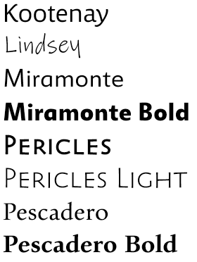
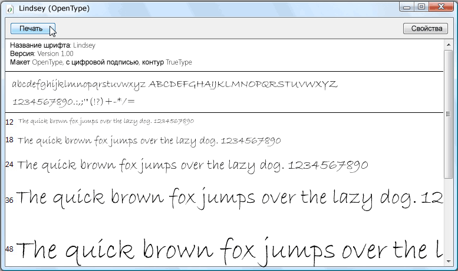

Образец пакета шрифтов OpenType
В этом разделе рассматриваются образцы шрифтов OpenType, которые распространяются вместе с Windows SDK. Образцы шрифтов поддерживают расширенные функции OpenType, которые могут использоваться приложениями Windows Presentation Foundation (WPF).
Шрифты в пакете шрифтов OpenType
Windows SDK предоставляет набор образцов шрифтов OpenType, которые можно использовать при создании приложений Windows Presentation Foundation (WPF). Образцы шрифтов предоставляются по лицензии от Ascender Corporation. Эти шрифты реализуют только подмножество общих функций, определенных в формате OpenType. В следующей таблице приведены названия образцов шрифтов OpenType.
| name | Файл |
|---|---|
| Kootenay | Kooten.ttf |
| Lindsey | Linds.ttf |
| Miramonte | Miramo.ttf |
| Miramonte Bold | Miramob.ttf |
| Pericles | Peric.ttf |
| Pericles Light | Pericl.ttf |
| Pescadero | Pesca.ttf |
| Pescadero Bold | Pescab.ttf |
На следующем рисунке показано, как выглядят образцы шрифтов OpenType.

Образцы шрифтов предоставляются по лицензии от Ascender Corporation. Ascender является поставщиком передовых решений для шрифтов. Для лицензирования расширенных или настраиваемых версий образцов шрифтов см. веб-сайт корпорации Ascender.
Note
Являясь разработчиком, вы несете ответственность за наличие у вас необходимых лицензионных прав на любой шрифт, который вы включаете в приложение или распространяете иным образом.
Установка шрифтов
Можно установить образцы шрифтов OpenType в каталог шрифтов по умолчанию Windows, \WINDOWS\Fonts. Для установки шрифтов используйте панель управления Fonts. После установки шрифтов на вашем компьютере они будут доступны для всех приложений, которые ссылаются на шрифты Windows по умолчанию. Можно отобразить характерный набор символов в нескольких размерах шрифта, дважды нажав файл шрифта. На следующем снимке экрана показан файл шрифта Lindsey, Linds.ttf.

Отображение шрифта Lindsey
Использование шрифтов
Есть два способа использования шрифтов в вашем приложении. Можно добавить шрифты в приложение в виде элементов содержимого проекта, которые не внедряются в качестве ресурсов в сборку. Кроме того, можно добавить шрифты в приложение в виде элементов ресурсов проекта, которые внедряются в файлы сборки приложения. Дополнительные сведения см. в разделе Упаковка шрифтов с приложениями.